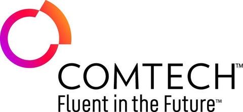
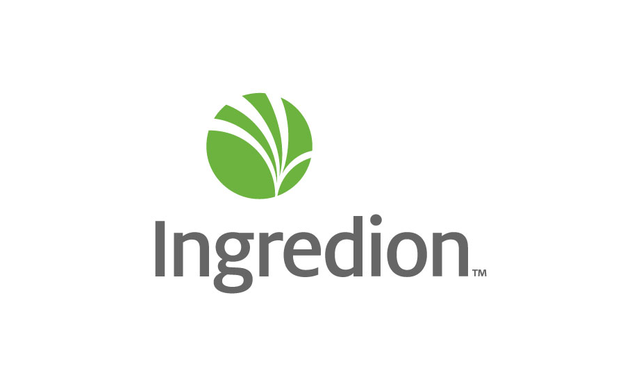

Co-Founder & Executive Director
- Led an 8-person team building a multi-agent AI slide-generation tool.
- Coordinated sprints, GitHub workflows, and production deployments.
- Conducted user research and pitched to investors to refine product roadmap.

Graduate Research Assistant
- Benchmarking PINN and deep-learning methods on physics-informed PDE foundational models.
- Designed simulation pipelines and analyzed error vs. inference-time trade-offs.

AI & NLP Systems Engineering Intern
- Built AWS Lambda NLP pipelines for 911-call severity classification.
- Integrated Naive Bayes classification models into PSAP API workflows.
- Packaged enriched call data via Flask services for emergency dispatch systems.

Technical Sales Intern
- Analyzed Salesforce data to uncover 38% increase in new sales volume.
- Presented market insights to executives and account managers.
- Supported client engagements, improving startup partner retention.
Teaching Assistant
- Facilitated labs and graded assignments for Mechanical Engineering, Design, and Thermodynamics courses.
- Supported over 150 students.